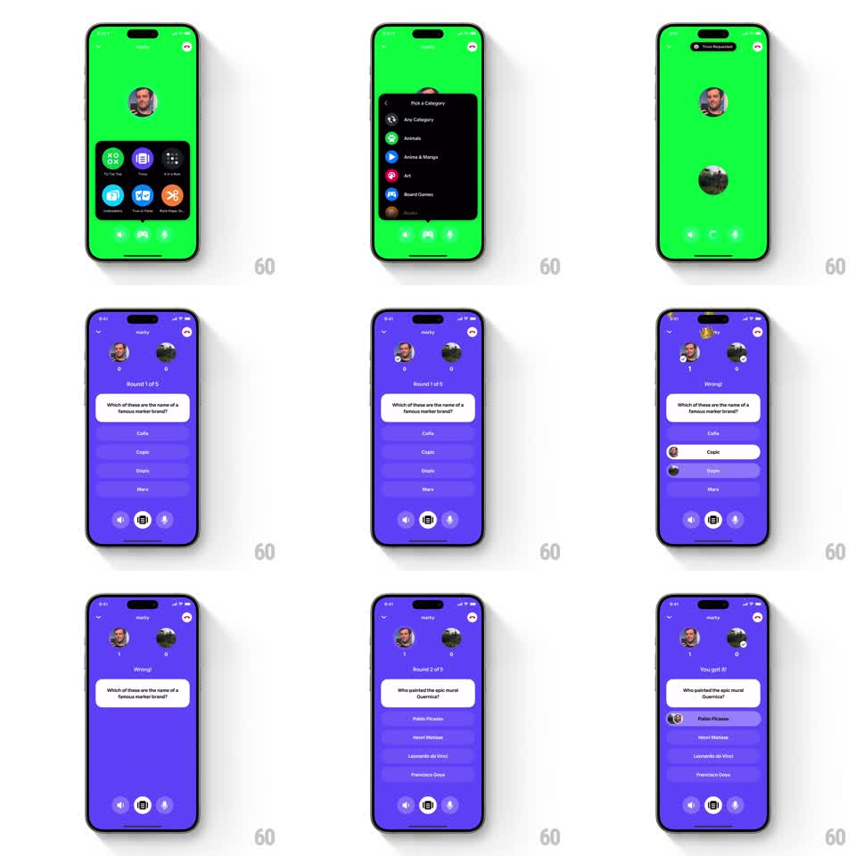

Media
Frame-by-frame

Rebuild this interaction 1:1: Honk's trivia category morph - the game picker sheet morphs into a category list, the pick collapses into a status toast at the top, and rounds play out on the purple board with springy answer reveals.

Rebuild this interaction 1:1: Honk's trivia category morph - the game picker sheet morphs into a category list, the pick collapses into a status toast at the top, and rounds play out on the purple board with springy answer reveals.
## Integration
Integration: stack-agnostic spec - springs given as stiffness/damping, timed motions as duration + curve; map every value to your framework and animation library of choice.
## Scene
Green lobby with a dark game-picker sheet (Tic-Tac-Toe, Trivia, Word Race, Honk, Video, Pool Party icons). Tapping Trivia morphs the sheet into a "Pick a Category" list (Any Category, Animals, Anime & Manga, Art, Board Games, Books). The pick collapses into a small toast at the top ("Total Requested"), and the board shifts to purple: two avatars with score badges, "Round 1 of 5", a question card ("Which of these are the name of a famous marker brand?") over answer rows (Cello, Copic, Dopln, Marx).
## Motion spec
Pattern: sheet-to-list morph with toast collapse and answer reveal springs.
- Tap Trivia: the picker grid's icons scatter-fade (100ms stagger) while the sheet container morphs (height + corner radius over 300ms, spring ~300/24) into the category list, rows staggering in from below (40ms each).
- Tap a category: the list rows collapse upward into the selected row (each row slides up and fades, 30ms stagger), which itself shrinks into a compact toast pill pinned under the status bar (scale + position morph, 300ms, spring ~320/20).
- Board transition: background wipes green -> purple (300ms); avatars pop in (scale 0.8 -> 1, spring ~340/14, 60ms apart); the question card slides up (spring ~300/22) followed by answer rows (40ms stagger).
- Answering: the tapped row flashes and both players' picks reveal - each chosen row turns white with the player's avatar sliding in from the left (spring ~340/16); verdict text ("Wrong!" / "You got it!") replaces the round label with a slide-fade (200ms) plus a small emoji popping beside it.
- Score badges increment with a pop (scale 1 -> 1.35 -> 1, spring ~340/13); the next round's question card slides in from the right (300ms).
## Calibration
- The morph chain is one continuous transformation: picker -> list -> toast, never separate modals.
- Wrong and right verdicts differ in motion: wrong adds a small horizontal shake (+-8pt, 3 cycles) on the picked row; right adds a scale pulse.
## Reduced motion
Picker crossfades to list; toast appears without morph; verdicts fade in.
## Don't miss
- Player avatars appear ON the answer rows they picked - the social proof is the point.
- Round counter and score badges stay pinned; only the question region changes between rounds.